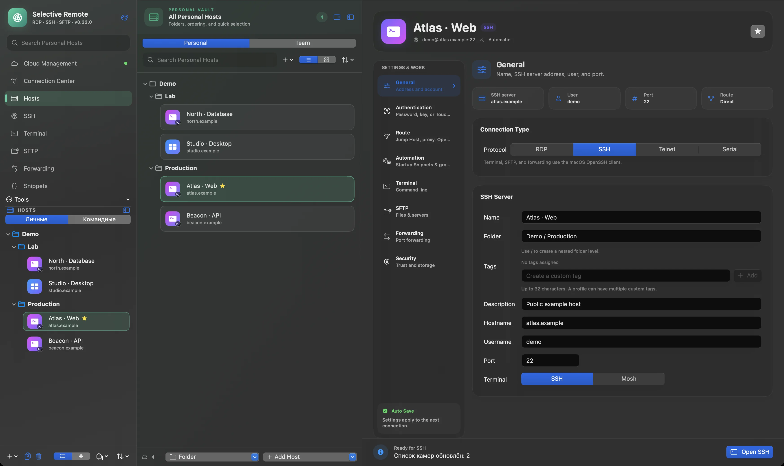
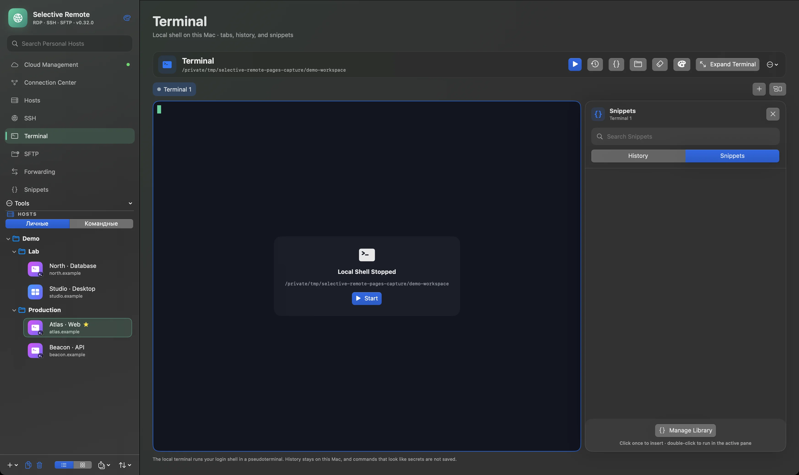
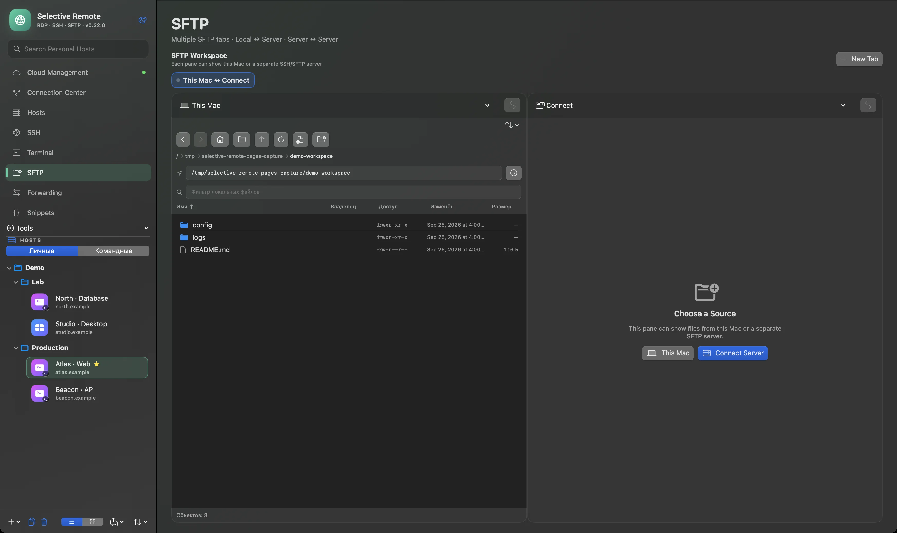
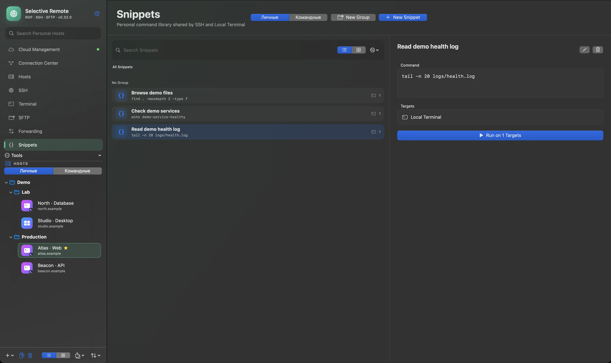

Connect
Keep RDP and SSH connections within reach.
NATIVE MAC APP · OPEN SOURCE
Current download · v0.31.0SSH, SFTP, RDP and tunnels in a native Mac app. Connect, organize and work without losing context.
The screenshots show the unreleased 0.32 workspace. The available Mac download is v0.31.0.
Coming in 0.32 · Actual app capture · synthetic demo data · v0.32.0 (163) preview
01 / 03
A clear path from a saved host to the work that needs doing.
Keep RDP and SSH connections within reach.
Group hosts and find the right system quickly.
Move into terminal sessions, files or remote desktop.
MAC WORKSPACE
The upcoming 0.32 interface brings Personal and Team hosts into one native workspace. Your current v0.31.0 download keeps local SSH, SFTP, RDP and tunnels available.

Actual app capture · synthetic demo data · v0.32.0 (163) preview
SELECTIVE REMOTE / TOOLS
Real application views: the terminal and file workspace stay close to your connections.
Tabs, panes and snippets stay close to the host. The demo shell shown here is intentionally stopped.

Actual app capture · synthetic demo data · v0.32.0 (163) preview
A two-pane SFTP workspace for Mac ↔ Server and Server ↔ Server transfers. The demo shows local files with no server connected.

Actual app capture · synthetic demo data · v0.32.0 (163) preview
Keep demo commands in the Snippets library, with clear targets for SSH and local terminal workflows.
Actual app capture · synthetic demo data · v0.32.0 (163) preview

MAC ↔ CLOUD
Coming in 0.32: Personal Vault will synchronize client-encrypted Hosts, Credentials and Snippets across trusted Mac and browser devices. Local work remains available without an account.
Open Cloud ↗Illustration of the planned synchronization path, not an application screenshot.
Coming in 0.32: Team Vaults bring shared Hosts, Credentials and Snippets together with roles, invitations and trusted devices.
PERSONAL / TEAM
Personal Vault stays yours. Team Vault scopes shared work explicitly, with access controlled per role and device.
OPEN SOURCE / SECURITY
Selective Remote is open source. The current Mac app uses macOS Keychain and SSH host verification. Client-encrypted Cloud Vaults belong to the upcoming 0.32 release.
Explore the source ↗GUIDES
Practical notes for the Mac workflows already available.
ABOUT / SUPPORT
Free to use. Voluntary support helps continued development. Follow the project or ask a question through its public channels.